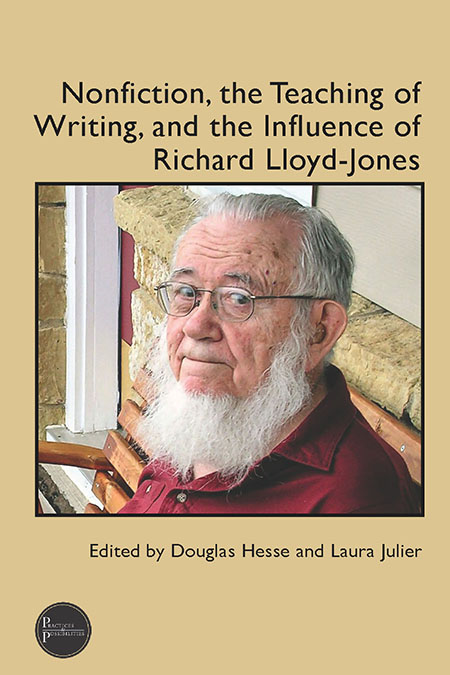

“Creative” writing and “academic” writing have historically existed in two separate spheres in the realm of academia. Creative writing as we have known it since the 20th century, focuses on forms such as the short story, fiction, and poetry. Additionally, it is often overlooked in its utility. Nonfiction, the Teaching of Writing, and the Influence of Richard Lloyd-Jones not only challenges the utility of teaching academic writing but highlights the academic and pedagogical potential of creative nonfiction by invoking the work of Richard “Jix” Lloyd-Jones, the former chair of the English Department at the University of Iowa. With his emphasis on forms such as the lyric essay, memoir, journal, and experimental writing, this work explains how Richard Lloyd-Jones contributed to the establishment of the first American graduate degree program in nonfiction writing, and then uses testimonials from eleven instructors in various academic settings who utilize his pedagogical methodologies, as well as the results of utilizing those methods.
The book is divided into two parts; Part One begins with the legacy of Richard “Jix” Lloyd-Jones and gives a detailed overview of who he was, and how his work paved the way for creative writing instruction, while Part Two is a compilation of essays written by other instructors that aims to validate Lloyd-Jones’s work by demonstrating what his approaches achieve when they are put into practice. The testimonies provided are numerous, and the scholarly insight that they provide is invaluable. But rather than acting as a loose compilation of inference-based case studies, the book relates each study to the ideas and teaching philosophies of Richard Lloyd-Jones, attempting to answer several of the questions that guided his career: How is writing typically evaluated? What are the consequences of failure? Is writing instruction product-centered, or process-centered? Why even bother with Creative Nonfiction?.
Richard “Jix” Lloyd-Jones, the figure at the center of the text, is introduced after a brief overview of the rise of the MFA Program at the University of Iowa. Between 1970 and 2000, there is a visible divide between “creative” writing and “other” writing: nonfiction, expository, rhetorical. During this time, it is explained that the University of Iowa’s English Department began to re-vamp its curriculum, offering over thirty writing courses by 1974 that encompassed fiction, poetry, playwriting, and many others. As the chair of the University of Iowa’s Department of English and Director of their School of Letters, Lloyd-Jones is significant because of his role in bridging the gap between “required” writing (technical, academic writing) and “creative” writing (in the sense of nonfiction, such as the essay). We learn that Richard Lloyd-Jones was an experienced instructor of the former, as made evident by his experience teaching technical writing to engineering students (Hesse and Julier, 2023). But in a process-focused pedagogy, it is creative nonfiction that is encompassed in his teaching methods.
This review will provide a brief overview of Richard Lloyd-Jones’s impact on the field of Creative Nonfiction while focusing on four key contributors from Part Two, using one essay from each to demonstrate how the questions mentioned previously are addressed by contemporary scholars that were influenced by his work. Additionally, it aims to take the book’s holistic analysis of creative nonfiction to gauge how effectively it establishes the influence of a single scholar on an entire field of study.
Douglas Hesse is a former Professor of English at the University of Denver and the founding Executive Director of Writing, as well as a co-author of the book Creating Nonfiction (2009.) In his professional career, he has served in leadership positions in several academic societies, including president of the National Council of Teachers of English (2016), chair of the Conference on College Composition and Communication (2005), president of the Council of Writing Program Administrators (2023), and the Chair of the Association for Writing Across the Curriculum (2022-2024.) He has been the recipient of numerous writing awards, such as the Donald Murray prize and a “notable essay” mention in The Best American Essays. He was honored as a Professor Emeritus of Writing and English in 2024.
Laura Julier is a former professor in the Department of Writing, Rhetoric, and American Cultures at Michigan State University, where she also served as the director of the Professional Writing Program. She has taught courses in editing, publishing, and nonfiction, and she is the former editor of Fourth Genre: Explorations in Nonfiction, a literary nonfiction journal published by the Michigan State University Press. In addition to her numerous published personal essays and articles, she directed the University of Michigan’s Faculty Writing Project and was awarded the Michigan Campus Outstanding Faculty Award.
Part two of the text turns the focus away from Richard Lloyd-Jones himself and instead opts to highlight how other instructors have used his methods, and the results that they had achieved by doing so. This structure shift is rhetorically effective because it justifies the proposed benefits of creative nonfiction instruction through results of its implementation in different scenarios, rather than working on the assumption that it is objectively correct. While there are several notable contributors to this section of the text, I will highlight the contributors whose works were selected for the purpose of this review, as well as the key points that their works highlight:
The Kellog W. Hunt Professor of English Emerita at Florida State University, Yancey has held several leadership positions in organizations such as the Conference on College Composition and Communication (CCCC), National Council of Teachers of English (NCTE), and the Council of Writing Program Administrators. She is the recipient of several awards, including the Florida State Graduate Mentor award, the CCCC Research Impact Award, FSU Graduate Teaching Award, Donald Murray Prize, and many others. Her research interests include writing curriculum, pedagogy, and assessment. Her essay “Writing as Evaluation” attempts to answer the question of how writing is evaluated by defining evaluation in the traditional academic sense, while also highlighting the affordances and drawbacks of evaluation.
An associate professor in the M.F.A. and undergraduate creative writing programs at the University of Central Florida, and recipient of the Annie Dillard essay award, Bartkevicius has published creative works in several academic and creative writing journals, such as The Hudson Review and Fourth Genre. Her essay “Failure Pedagogy” dives into the historic academic attitudes toward failure, its consequences, and its unexpected benefits.
An English instructor who has served as the director of several first-year writing programs at various universities, including the University of Michigan. Nancy DeJoy’s approach to instruction is one that focuses on “participation and contribution,” rather than “adaptation and consumption” (Hesse and Julier, 2023, pp. 235). She is also an accomplished poet, and earned over 30,000 views for her TEDx talk, “Illuminating Survivor Voices.” Her essay “Process Pedagogy” analyzes the ongoing “Product versus Process” debate in composition instruction while also attempting to define the “process” in process-centered instruction.
An essayist and Assistant Professor Emerita of English at Luther College, Faldet has developed several anthologies, such as Our Stories of Miscarriage: Healing With Words. Her essay “Why Creative Nonfiction” attempts to bridge the gap between creative nonfiction and “academic” writing, giving examples of how the two subfields complement each other, and exploring the core question at the heart of the book: “why even study creative nonfiction?”